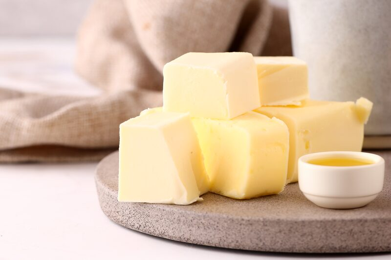
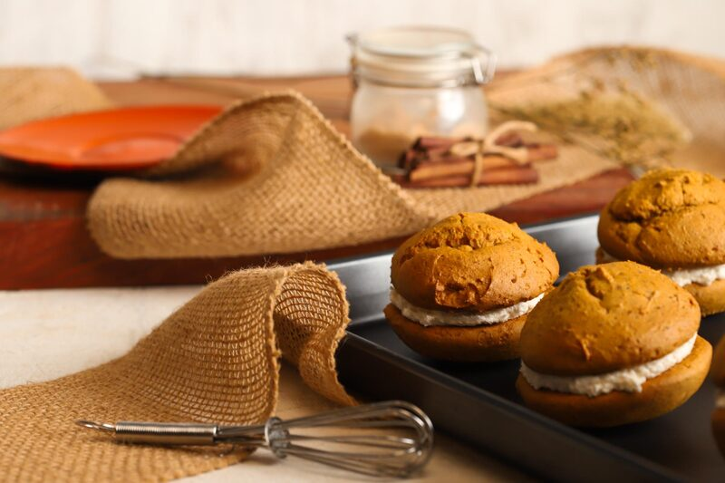
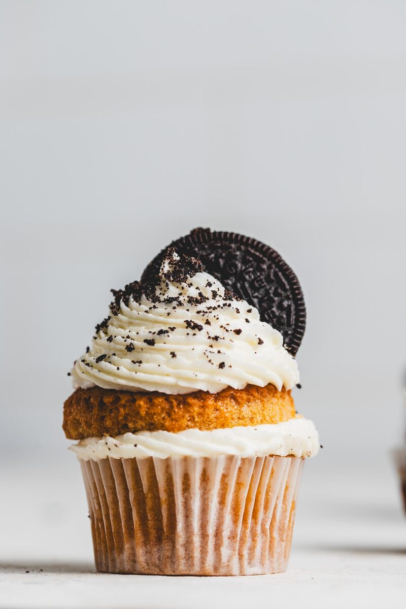
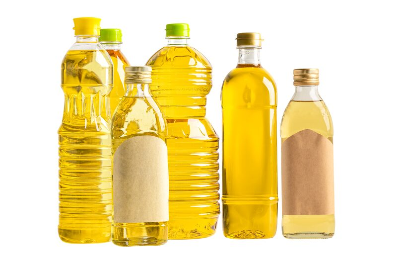
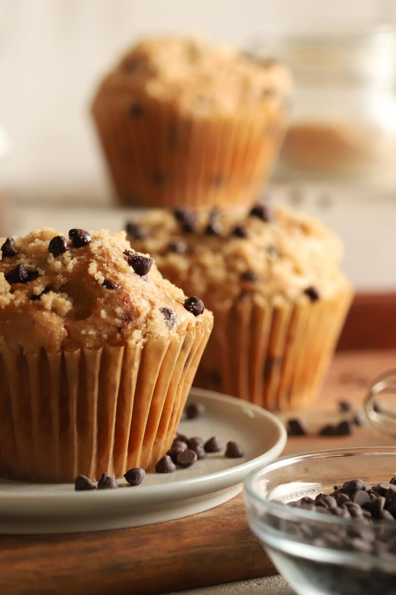

Fat: The Ingredient That Makes or Breaks Your Gluten-Free Structure
Most bakers treat fat as a flavor decision. But fat is structural, and in gluten-free baking it's carrying more weight than it does in wheat.
Most bakers treat fat as a flavor decision. Butter or oil. Coconut or sunflower. Whatever's in the pantry.
But fat is structural, and in gluten-free baking it's carrying more weight than it does in wheat. It decides how tender your crumb is, how far your cookie spreads, and whether your bake is still worth eating on day two.
Fat Is a Lipid — It Doesn't Mix With Water
Fat is hydrophobic. Wherever it coats a particle, water can't reach. Every other ingredient in your bowl is trying to bond and hydrate. Fat gets in the way. The two main jobs fat does for you in a bake come from this.
Job one: barrier
Fat acts as a partial barrier. It coats your flour and starch, prevents over-hydration, and stops your starches and proteins from bonding too tightly.
That tight network is what gives you a tough, rubbery bake. Less bonding means more tenderness.
The word partial matters here. Fat never seals a particle completely — enough water still gets through for your starch to gelatinize in the oven. What fat prevents is the hydration creating an overly dense network, not the hydration itself.
Job two: slowing staling

Same barrier, opposite direction.
Now the water is inside your gelatinized starch, trying to get out. Fat sits between the starch molecules and slows them from re-aligning and squeezing that water back out. That process is called retrogradation, better known as staling.
This is the part most people have backwards: staling isn't drying out. Your bake isn't losing water to the air. The starch is tightening up and pushing water out from the inside. That's how a loaf sealed in a bag still goes stale.
Wheat has a gluten network holding onto some of that water. Gluten-free doesn't. You're working with a mostly-starch system and nothing to hold the moisture in place, which is why GF bakes firm up in a day when their wheat counterparts take three.
Fat is one of the few tools you have against it.
Melting Point Controls Spread
This is where your choice of fat shows up visually.
Every fat has a temperature at which it gives up. Until that point, it's holding structure. After it, everything softens and moves. The lower that number, the more your bake spreads before the crumb sets.
| Fat | Approximate melting point | Effect |
|---|---|---|
| Liquid oils (sunflower, canola, olive) | Liquid at room temp | Maximum spread, no aeration, softest crumb |
| Coconut oil | 76°F / 24°C | Melts on a warm counter — spreads early |
| Cocoa butter | 93°F / 34°C | Sharp melt, holds firm right up until it goes |
| Vegan butter | 95–105°F / 35–40°C | Moderate spread, good height |
| Shortening/palm | 110–120°F / 43–49°C | Least spread, most height |
Swap coconut oil for vegan butter in a cookie at the same weight, and you get a completely different cookie, even if nothing else in the formula changes. Wider, flatter, crisper at the edge.
Another way the type of fat affects your bake is whether you use solid or liquid fat. Solid fat traps air when you cream it with sugar, but liquid oil can't. So a fat choice is also a leavening choice — creamed vegan butter contributes lift that oil simply doesn't.
Fat Percentages by Category

These are baker's percentages — a percentage of your total flour and starch blend, which always equals 100%. If your blend weighs 1,000g and you're making muffins at 30%, that's 300g of fat.
| Category | Fat as % of flour blend |
|---|---|
| Lean bread, sourdough | 0–5% |
| Enriched dough, brioche-style, donuts | 8–15% |
| Pancakes, waffles | 10–20% |
| Muffins, quick breads | 25–40% |
| Layer cakes | 35–50% |
| Scones, biscuits | 40–50% |
| Cookies | 40–60% |
| Brownies | 50–70% |
| Shortbread, pie crust | 50–70% |
Read the list top to bottom, and you're reading a spectrum from structure to tenderness.
Low fat means you're aiming for structure. Bread needs its starch network to set firm and hold gas. Fat interferes with that, so you use very little.
High fat means you're aiming for tenderness and shortness. Shortness is a texture term — crumbly and tender, snaps rather than bends. Think shortbread, pie crust, and sablés. The name comes from shortening, which is literally the act of shortening the bonds.
Under-fat and you go sandy and stale fast. Over-fat and you go greasy, flat, and dense, without enough network left to hold anything up.
Gluten-free formulas often sit at the higher end of these ranges compared to their wheat equivalents, for three stacked reasons: shelf life, grit, and crumb. Rice and sorghum have hard particles that read as sandy on the tongue, and fat lubricates them. High-starch blends set up tight, and fat interrupts that. Both are real. But be careful with the reasoning — see below.
How to Actually Swap Oil and Butter

Vegan butter is roughly 15–20% water. Oil is 100% fat. Swap them one-to-one, and you've added fat and removed liquid in the same move. The result is greasy and dry in the same bite.
Use about 80% by weight when going oil-for-butter, and add the difference back as liquid. Replacing 200g of vegan butter? Use 160g of oil and add roughly 35g of liquid.
And one thing to be strict about in your formula sheet: oil is a fat, not a liquid. It goes in your fat percentage, never your hydration. Count oil as liquid, and your formula reads wet on paper and bakes dry in the pan.
Mix Order: Hydrate First, Fat After

You control which of fat's two jobs dominates by when you add it.
Gluten-free flours are slow to take up water, and psyllium needs free water to gel. If oil goes in with the flour, it coats those particles before hydration happens — you get grit, a weak binder gel, and a bake that stales faster because the water never fully made it into the starch.
For muffins, quick breads, GF bread, and cakes by the mixing method: combine flour blend, binder, and liquid. Let it rest. Then stream in the oil.
Two exceptions:
- Pie crust, shortbread, scones, biscuits — fat goes in first, cut into the dry flour. You're blocking hydration on purpose. That's shortness.
- Creamed cookies and cakes — solid fat and sugar get creamed first, flour last. You're building air cells and trading some hydration for lift.
For structure and shelf life, hydrate before fat. For short and crumbly, fat before water.
What Fat Doesn't Do
Fat does not hold water. It can't — it repels water. Your binder and your starch hold water. Fat only slows the loss.
This matters because it changes your troubleshooting order. If your gluten-free bake comes out dry, adding more fat is the wrong first move. Check your hydration and your binder first. Fat masks the symptom — an under-hydrated dough with extra oil is greasy and dry at the same time, which is the worst of both.
Fat doesn't replace gluten. Your binder does that. Fat covers what's left.